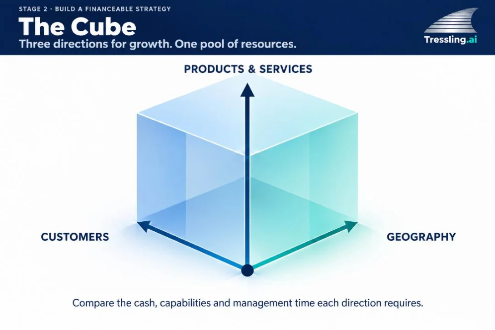
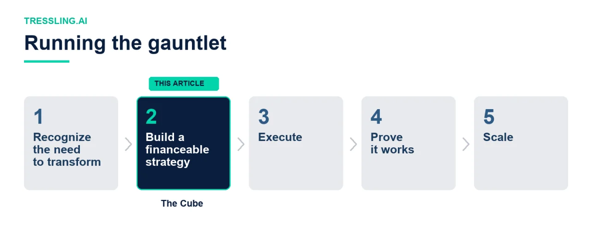

When you’re scaling a company, growth options pull you in different directions. I know I’ve experienced this. Am I trying to grow my customer base or grow sales with the customers I already have? Should I develop new products or services to sell to my existing customers? Should I expand into new territories?
For years, I’ve used a framework I call The Cube. It helps me conceptualize growth options along three axes. You can grow along any of them, or some combination. Each direction makes different demands on your business and requires different resources. AI can make growth less expensive to pursue. I still need to know whether we have the people and capital to deliver what we win.
Exhibit 1
Three directions compete for the same resources


Ansoff and the Cube
Igor Ansoff’s 1957 product-market matrix describes four growth choices. Market penetration means selling more within your existing market. Product development introduces new products to that market. Market development takes existing products into new markets or uses. Diversification changes both. Ansoff also examined the resources these choices require, particularly the new skills and facilities involved in diversification. [1]
Ansoff’s later work also included a three-dimensional model covering market need, products and technologies, and market geography. [2] The Cube uses customers, products and services, and geography to examine the practical commitments behind a growth decision.
The geography axis describes where you sell and serve customers. The resource question is how much of a new territory your existing operation can support. An online service may reach another country from its current base. A distributor may need another warehouse, local inventory and a service team. Geography and customers can expand together, as Exhibit 2 shows.
AI changes the comparison. It can reduce the work required to pursue an opportunity. Your competitors have access to the same tools, and your customers may use them to buy differently. I want to examine what that means for the resources we commit to growth.
Customers: more of them, or more from each?
Sales teams often have two mandates. Hunters find new customers. Farmers grow sales with existing customers. Each needs different skills and organizational support. Your hunter’s opportunity is someone else’s farmer’s risk. But sometimes the better choice is to concentrate the customer base you already have.
When we restructured a trade contractor, previous management had sent quotes to general contractors from a public tender list. We stopped that, and chose to bid only to contractors we knew, had worked well with, and had been paid consistently by. The company went from a scattered approach to a concentrated list of contractors.
We also brought our more experienced tradesmen into the bidding process. They could read the drawings and knew what it took to install the work. A design that looked fine on a computer could be unnecessarily complicated in the field. They spotted over-engineering and helped us propose changes that reduced the general contractor’s cost and installation time.
The strategy worked. We became a preferred bidder with several GC’s and won several multi-million-dollar contracts. We narrowed our customer base while deepening our service offering. On the Cube, we shrank along one axis (customers) and grew along another (products/services).
What would I do differently today? AI tools can automate parts of the take-off process, measuring and counting items from drawings. [3] I would use that capacity to improve bid quality and focus more on value-added engineering to reduce time and costs. I wouldn’t use it to launch more bids. I would still bring experienced tradespeople into the review. Their knowledge of how the work gets installed was central to what we offered.
There’s a delicate balance between bidding too little and bidding too much. If you don’t bid enough, you have idle employees, which contractors can ill afford. If you win too much, you strain your crews, supervision, and cash. You may also jeopardize relationships you’ve been so careful to cultivate. That’s the contractor’s dilemma.
You can mitigate the ups and downs of project work by having different sources of revenue. In our trade contractor, we had a healthy service business and could move tradespeople between service and projects as demand required.
Products and services: what will expansion require?
Physical products and services place different demands on cash. Consider a manufacturer choosing between a new product for existing customers and selling its current range abroad. The new product may use the same factory but need different tooling and stock. Exporting may avoid those development costs while requiring inventory to sit overseas. AI could help prepare designs or documentation. The cash tied up before a customer pays still needs funding. On the Cube, those commitments differ by product and geography.
For a software company, the difficult question may be what customers will pay for an additional feature. AI-assisted development could make it cheaper to add functionality to the existing product. A competitor could include similar functionality in its subscription. Moving along the products axis then adds maintenance and support obligations with little additional revenue.
These are illustrative situations, but they expose different limits. In one, cash is committed to physical stock. In the other, a service must keep being supported even if customers won’t pay extra for it. The cost of producing the offer is only part of the analysis.
Geography: what must you establish elsewhere?
Geography deserves its own axis because the resources needed to reach a buyer can differ significantly from those needed to serve one. A business delivering online may be able to expand from its current operation. A business promising installation or repairs must consider how it will deliver that service.
Consider an equipment distributor selling its existing range in a new region. It can build on its supplier relationships and technical knowledge. AI could help research prospective accounts and tailor product information for local buyers. But suppose those buyers expect spare parts immediately and a technician when equipment fails. Winning their orders may require nearby stock and service staff. Those commitments start before the new region generates reliable sales.
Buyers who can source equipment directly may still pay for that local availability. I would want to understand how much they value it before committing to a warehouse and service team. The alternative could be a complementary product line sold through the existing operation.
Exhibit 2
A new region requires more than an existing product range
![The Cube: entering a new region. An equipment distributor moves along the customers and geography axes while its product range stays the same. It builds on its product range, supplier relationships, technical knowledge and ordering systems. AI can help research prospective accounts, adapt product information for local buyers and extend routine technical support. AI can also increase pressure: buyers find suppliers directly, local competitors improve service, and other entrants reach the same customers. Still to fund and manage: local stock, service coverage, customer credit and management presence.](assets/articles/the-cube-2.webp)
Choosing what to commit
At the trade contractor, we chose to pursue more work from fewer customers and deepen the service we offered them. The service business gave us some flexibility in deploying our people. Those details mattered to whether the strategy could work.
That is how I would use the Cube today. I would put the alternatives side by side and examine what each requires from the business, including the resources needed to keep serving existing customers. AI can make growth less expensive to pursue. I still need to know whether we have the people and capital to deliver what we win, and what we can earn from it.
An expansion can make sense on its own and still be a poorer use of resources than another direction on the Cube. That comparison belongs at the centre of a financeable strategy.
AI will transform your business, one way or the other. Build a financeable strategy. Prove it works. Scale it. I write about how to run that gauntlet.

Sources
- H. Igor Ansoff, “Strategies for Diversification,” Harvard Business Review, September–October 1957, pp. 113–124.
- Gerben van den Berg and Paul Pietersma, Key Management Models, 3rd ed., Pearson, 2015, pp. 3–4. Figure 1.2 credits Ansoff, Corporate Strategy, revised edition, 1987.
- Togal.AI, take-off features: detecting, measuring, counting and comparing drawing elements.

About the author
Since founding Tressling in 2003, Dan McLaughlin has been an operator, investor, and advisor. As an owner-operator, he has scaled businesses in construction, real estate, and manufacturing. As Chief Investment Officer of SASCO Global Investments, he led investment decisions for a US$400 million fund, and as an advisor, he has structured more than US$1 billion in debt and equity financings. He also held senior roles in restructuring at PwC and in international finance and restructuring at Bombardier Aerospace.
This article is for information only and is not investment, legal or tax advice.